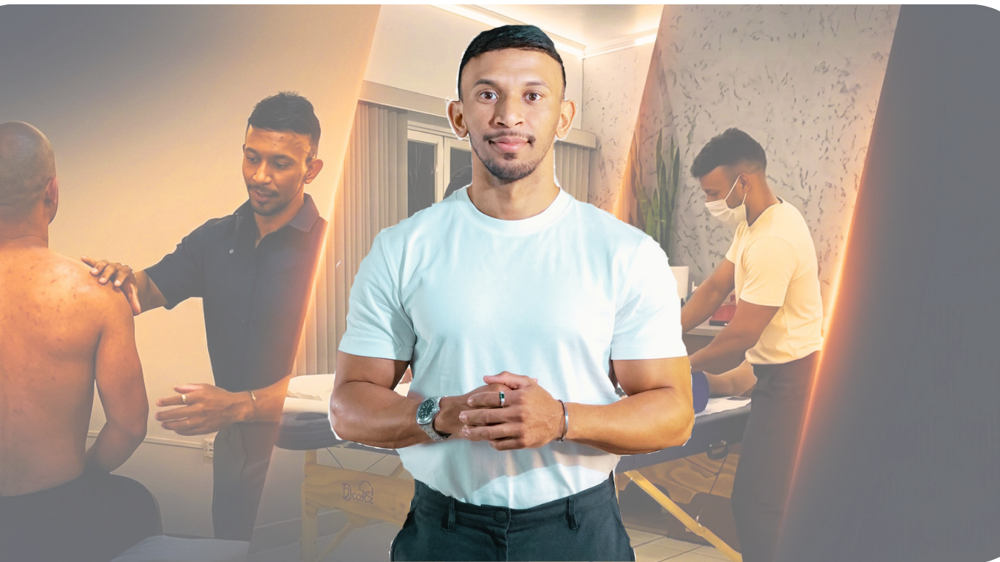
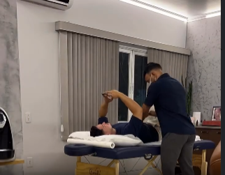
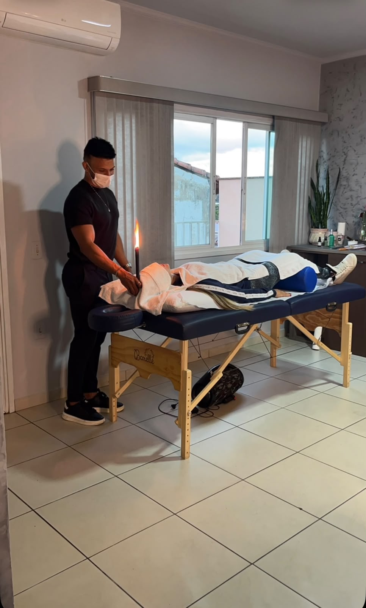
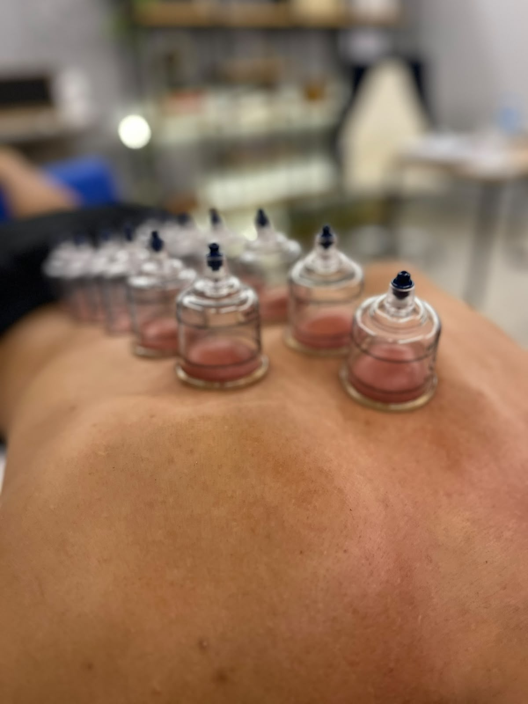

Conheça o Profissional

Jardeson Kelton
Gestor de Reabilitação e Performance Física, com mais de 10 anos de experiência.
Recupere o equilíbrio e alcance alta performance com atendimento personalizado e protocolos de excelência em reabilitação e bem-estar.
Agendar Avaliação
Atendimento individualizado com protocolos eficazes, que vão desde o alívio das dores até a conquista da máxima performance.
Você compartilha suas queixas e sintomas, nós entendemos o que o seu corpo realmente precisa para se recuperar.
Nada de soluções isoladas. Criamos um plano de tratamento estruturado de acordo com a sua condição e necessidade específica.
Selecionamos os recursos terapêuticos que aceleram a regeneração, reduzem dores e fortalecem o corpo para prevenir novas lesões.

Redução de tensões e dores musculares.

Equilíbrio energético e alívio de dores.

Melhora da circulação e recuperação muscular.
Gestor de Reabilitação e Performance Física, com mais de 10 anos de experiência.